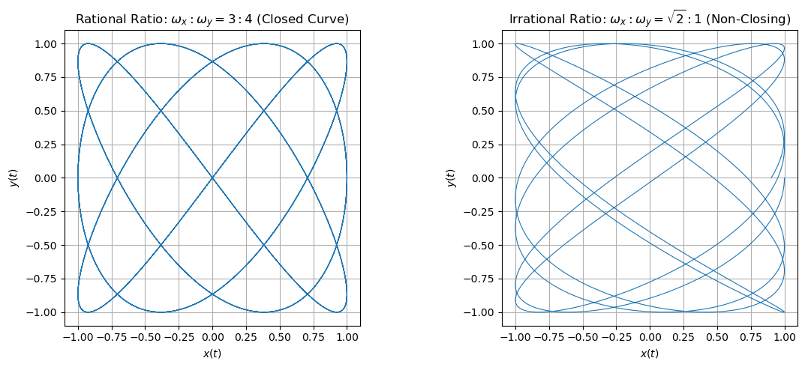
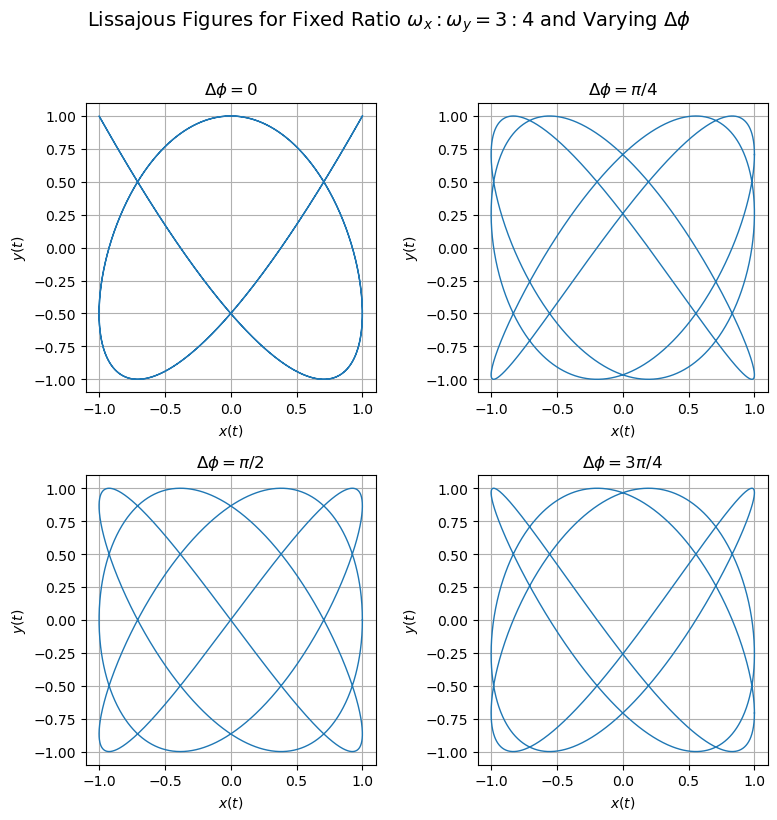

B2.3 Frequency Ratios, Phase Difference, and Closure Conditions#
B2.3.1 Motivation#
In the previous section we focused on the equal-frequency case
and saw that the motion
always traces either a straight line, an ellipse, or a tilted ellipse.
Real systems, however, often have different natural frequencies in the two directions:
A mass attached to springs with different stiffnesses in the horizontal and vertical directions.
A 2D oscillator where \(x\) and \(y\) directions correspond to different normal modes.
A signal analyzer comparing two periodic signals of slightly different frequencies.
Small oscillations in a potential well where motion in two directions has different restoring forces.
In these cases,
with \(\omega_x \neq \omega_y\). The ratio
now becomes the key control parameter that determines:
whether the Lissajous figure is a simple shape or very complicated,
whether the curve closes on itself,
and how long it takes before the pattern repeats (if it ever does).
This section develops the concepts of frequency ratio, phase difference, and closure condition for Lissajous figures and connects them to physical ideas like beats, resonance, and synchronization.
B2.3.2 General Form and the Frequency Ratio#
We consider the general case:
Three ingredients shape the Lissajous figure:
Amplitudes \(A_x, A_y\)
– set the horizontal and vertical size.Angular frequencies \(\omega_x, \omega_y\)
– their ratio\[ R = \frac{\omega_x}{\omega_y} \]controls how many “lobes” or loops the figure may have.
Phase constants \(\phi_x, \phi_y\)
– their difference\[ \Delta\phi = \phi_y - \phi_x \]controls the orientation and internal structure.
The two most important questions:
Does the figure close? (Does the pattern repeat exactly?)
If it closes, how many loops or “lobes” does it have?
We will answer these questions by examining the frequency ratio \(R\) and its relation to periods.
B2.3.3 Periods and the Idea of a Repeat Time#
Each coordinate has its own period:
The motion in \(x\) and \(y\) repeats individually every \(T_x\) and \(T_y\), but the 2D pattern \((x(t), y(t))\) will only repeat when both coordinates are simultaneously back to their starting values.
We are looking for a repeat time \(T_{\text{rep}}\) such that
for all \(t\).
Conceptually:
\(x(t)\) repeats after integer multiples of \(T_x\): \(n_x T_x\).
\(y(t)\) repeats after integer multiples of \(T_y\): \(n_y T_y\).
The earliest time at which both have completed an integer number of cycles is when
for some integers \(n_x\) and \(n_y\).
This is only possible if the ratio \(T_x/T_y\) is rational.
B2.3.4 Rational vs. Irrational Frequency Ratios#
Because \(T_x = 2\pi / \omega_x\) and \(T_y = 2\pi / \omega_y\), we have
Case 1: Rational frequency ratio#
Suppose
with \(p\) and \(q\) integers (in lowest terms).
Then
and we can choose
So
Interpretation:
After \(p\) cycles in \(x\) and \(q\) cycles in \(y\), the motion returns to the exact same point in phase space.
The Lissajous figure is a closed curve.
The number of prominent “lobes” is related to \(p\) and \(q\) (e.g., \(1{:}2\), \(2{:}3\), etc., give characteristic shapes).
Case 2: Irrational frequency ratio#
If \(R = \omega_x / \omega_y\) is irrational, then there are no integers \(p, q\) (other than the trivial \(p = q = 0\)) such that \(p T_x = q T_y\).
Interpretation:
There is no finite repeat time \(T_{\text{rep}}\).
The point \((x(t), y(t))\) never returns exactly to its starting point with the same phase in both coordinates.
The trajectory does not close; instead, it gradually fills out a region of the plane (it becomes dense in some area of the ellipse-like bounding box).
This is analogous to having two rotating hands with incommensurate angular speeds; their relative angle never repeats exactly.

NOTE: Lissajous Figures in Institutional Logos: UEC Tokyo and MIT Lincoln Laboratory#
Lissajous figures appear not only in physics labs but also in the visual identity of major research institutions. UEC Tokyo (The University of Electro-Communications) uses a logo based on the classic (3:4) Lissajous figure—one of the most iconic closed curves produced by feeding two sinusoidal signals into the perpendicular inputs of an early oscilloscope. Before digital instruments, engineers tuned radio transmitters, synchronized oscillators, and compared frequency standards by adjusting controls until the oscilloscope displayed a stable, closed Lissajous curve instead of a drifting, non-repeating pattern. The UEC emblem reflects this deep historical connection between waveform analysis and electronics. MIT Lincoln Laboratory incorporates a similar Lissajous-inspired curve in its emblem, symbolizing the laboratory’s legacy in radar, communications, and signal processing. Both institutions chose these shapes because they visually encode the essential relationship between frequency, phase, and precision measurement—a perfect geometric metaphor for the scientific work they represent.
B2.3.5 Role of Phase Difference \(\Delta\phi\)#
The frequency ratio decides whether the figure closes. The phase difference \(\Delta\phi\) shapes how the closed curve (for rational \(R\)) looks.
We can write
so that \(\Delta\phi = \phi_y - \phi_x\).
Conceptual effects of \(\Delta\phi\):
For a given \(p{:}q\) frequency ratio, different values of \(\Delta\phi\) “twist” or “flip” the figure.
In some cases, \(\Delta\phi\) can make parts of the pattern symmetric or asymmetric.
For equal frequencies (\(p = q = 1\)), \(\Delta\phi\) rotates the ellipse and can even reduce it to a straight line when the phases align.
In practical applications (like using Lissajous figures on an oscilloscope):
\(\Delta\phi\) is read off from the tilt and shape of the closed figure.
Engineers can diagnose time delays or phase shifts between two signals by examining this geometry.

NOTE: Understanding the “Illusion” of Extra Lobes When Changing the Phase Difference#
When the frequency ratio is fixed—such as \(\omega_x : \omega_y = 3:4\)—the number of lobes and the overall looping structure of a Lissajous figure are completely determined by that ratio and cannot change. The ratio controls how many times the curve winds horizontally and vertically before it closes. However, changing the phase difference \(\Delta\phi\) alters the orientation and internal arrangement of those same loops. For \(\Delta\phi = 0\), portions of the curve lie directly on top of each other, creating a more symmetric appearance that can make the pattern look simpler. When \(\Delta\phi\) is nonzero (such as \(\pi/4\), \(\pi/2\), or \(3\pi/4\)), these overlapping segments separate and “unfold,” revealing loops that were previously stacked in the same location. The result can appear to have more lobes—but the underlying topology has not changed. Every plot with the same frequency ratio shares the same fundamental looping pattern; the phase difference simply rotates, twists, or skews the curve, redistributing the same features around the plane. This is why, in oscilloscope work, engineers always identify the frequency ratio first (from the number of horizontal vs. vertical lobes) and then interpret the phase difference from the curve’s tilt and internal shape.
B2.3.6 Examples: Simple Frequency Ratios#
To build intuition, it is useful to remember a few canonical cases (with suitable choices of amplitudes and phases):
\(1{:}1\) ratio (\(\omega_x = \omega_y\))
\(\Delta\phi = 0\): straight line.
\(\Delta\phi = \pi/2\): ellipse (which may be a circle if \(A_x = A_y\)).
\(1{:}2\) ratio
The \(y\) motion completes two cycles while \(x\) completes one.
The figure typically has a “figure-eight” or double-lobed shape (depending on \(\Delta\phi\)).
\(2{:}3\) ratio
The \(y\) motion completes three cycles while \(x\) completes two.
Produces a more intricate closed curve with multiple lobes, repeating every \(3 T_y = 2 T_x\).
In all these rational cases, there is a finite repeat time, and the curve is a beautifully structured closed Lissajous figure.
B2.3.7 Physical Interpretation: Beats, Resonance, and Synchronization#
Although Lissajous figures are geometric objects, the same frequency-ratio ideas show up in familiar physics contexts:
Beats:
When two frequencies are close but not equal, the beat pattern arises from their interference. The Lissajous figure slowly morphs in time, reflecting the changing phase relationship.Resonance and mode-locking:
Systems can lock into rational frequency ratios (e.g., \(1{:}2\), \(2{:}3\)) under nonlinear coupling, leading to stable closed Lissajous-like motions.Synchronization:
In signal processing or oscillator synchronization, observing a stable closed Lissajous figure indicates a rational relationship (and thus a kind of lock) between the two signals.
B2.3.8 Summary#
The frequency ratio \(R = \omega_x / \omega_y\) is the main control parameter for the complexity and closure of a Lissajous figure.
If \(R\) is rational (\(p{:}q\)), the figure is a closed curve that repeats after \(p\) cycles of \(x\) and \(q\) cycles of \(y\).
If \(R\) is irrational, the trajectory never exactly repeats and fills out a region of the plane.
The phase difference \(\Delta\phi\) shapes the detailed geometry (orientation, symmetry) of the figure but does not change whether the curve closes.
These ideas connect directly to physical notions of beats, resonance, and synchronization, and are widely used in experimental physics and engineering.
In the next section, we will relate these Lissajous patterns more explicitly to normal modes and real physical systems (oscilloscopes, vibrating structures, orbital motion, and more).